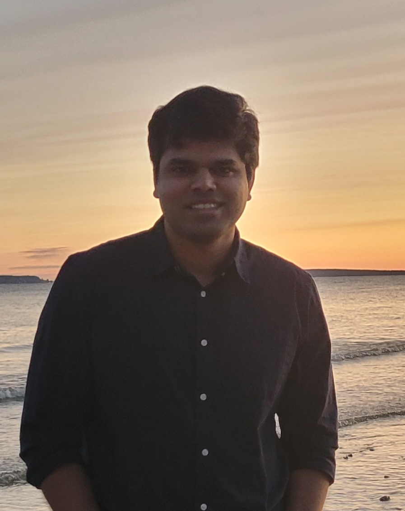

Hello there! I am Vishal, an aerospace engineer working at the intersection of data-driven methodologies, computational science, and fluid mechanics.
While the tools I develop are relevant for several engineering disciplines, my research work primarily revolves around data-driven modeling of transition and turbulence in fluid flows.
I graduated with a B.Tech. in Aerospace Engineering from the Indian Institute of Technology, Kanpur in 2016, and a Ph.D. in Aerospace Engineering from the University of Michigan, Ann Arbor in 2022 (Go Blue!).
During my Ph.D., I worked at the
Computational Aerosciences Laboratory
under the supervision of my advisor,
Prof. Karthik Duraisamy,
on creating methodologies to infer generalizable model augmentations for numerical models - predominantly closure models for Reynolds-Averaged Navier-Stokes (RANS) simulations - from limited data.
I currently work as a Senior Scientist at Flexcompute where I collaborate with some of the best people in the industry in meshing, numerics, solver development and PhysicsAI, to constantly improve the capabilities of our already best-in-class GPU-native CFD solver Flow360. I have previously worked as a Senior Aerospace Engineer at Analytical Mechanics Associates where I collaborated with highly esteemed researchers at NASA Langley Research Center on data-driven transition and turbulence modeling.
I currently work as a Senior Scientist at Flexcompute where I collaborate with some of the best people in the industry in meshing, numerics, solver development and PhysicsAI, to constantly improve the capabilities of our already best-in-class GPU-native CFD solver Flow360. I have previously worked as a Senior Aerospace Engineer at Analytical Mechanics Associates where I collaborated with highly esteemed researchers at NASA Langley Research Center on data-driven transition and turbulence modeling.
Through all my experiences, I have gathered significant expertise in scientific machine learning, numerical methods, high-performance computing (MPI/OpenMP/CUDA), optimization, inverse problems, uncertainty quantification, and scientific visualization. Over my career, I have used these skills to implement end-to-end scientific computing and machine learning workflows/pipelines including an unstructured, fully differentiable, adjoint-driven RANS solver to perform field inversion and machine learning studies that scaled to thousands of CPU cores. Outside work, I enjoy recreational programming, solving physics/mathematics problems, reading fiction/non-fiction, chess, long walks, and spending time with my lovely wife.
Selected Publications
- Vishal Srivastava, Christopher L. Rumsey, Gary N. Coleman, and Li Wang. "On generalizably improving RANS predictions of flow separation and reattachment." AIAA SciTech 2024 Forum. 2024.
- Nathaniel Hildebrand, Vishal Srivastava, Tamer A. Zaki, and Meelan M. Choudhari. "DeepONet-Assisted Optimization of Surface Topography for Transition Delay in A Mach 4.5 Boundary Layer." 14th International ERCOFTAC Symposium on Engineering Turbulence Modelling and Measurements (ETMM14), no. 20230001917. 2023.
- Vishal Srivastava, Valentin Sulzer, Peyman Mohtat, Jason B. Siegel, and Karthik Duraisamy. "A non-intrusive approach for physics-constrained learning with application to fuel cell modeling." Computational Mechanics 72.2 (2023): 411-430.
- Vishal Srivastava, and Karthik Duraisamy. "Towards a generalizable data-driven approach to predict separation-induced transition." 12th International Symposium on Turbulence and Shear Flow Phenomena (TSFP12). 2022.
- Vishal Srivastava, and Karthik Duraisamy. "Generalizable physics-constrained modeling using learning and inference assisted by feature-space engineering." Physical Review Fluids 6.12 (2021): 124602.
- Vishal Srivastava, and Karthik Duraisamy. "Aerodynamic design of aircraft engine nozzles with consideration of model form uncertainties." 2018 AIAA Non-Deterministic Approaches Conference. 2018.
Experience
- Flexcompute, Watertown MA
- Senior Scientist (October 2025 - Present)
- Analytical Mechanics Associates, Hampton VA
- Aerospace Engineer, Senior (January 2024 - October 2025)
- Engineer, Staff (June 2023 - December 2024)
- Aerospace Engineer, Senior (January 2024 - October 2025)
- National Institute of Aerospace, Hampton VA
- Research Engineer I (July 2022 - May 2023)
- University of Michigan, Ann Arbor MI
- Postdoctoral Research Scholar (June 2022 - July 2022)